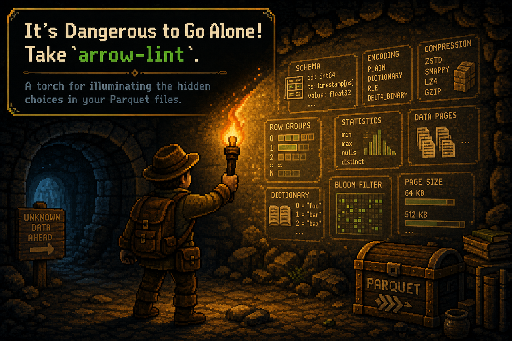

It’s Dangerous to Go Alone! Take arrow-lint.#
A torch for illuminating the hidden choices in your Parquet files.
{kind=link}

Parquet files can hold the same data while making very different physical choices. Row groups, compression, encodings, and Arrow schema details all shape how a file behaves later, but most of those choices are hidden unless you go looking for them.
This case study writes one simple Arrow table with PyArrow, DuckDB, and Polars.
All three files preserve the rows. They do not preserve the same metadata
story. arrow-lint helps make that story visible.
The first half of this post is the readable version: what changed, why it
matters, and what to do about it. The second half is a reproducible notebook
that creates the files, runs arrow-lint, and backs up each claim. The same
scenario is also covered by tests/test_parquet_writer_case_study.py.
The short version#
PyArrow, DuckDB, and Polars all wrote valid Parquet. The interesting part is that each writer made a different set of reasonable defaults.
Writer |
What changed |
|
Plain-English read |
|---|---|---|---|
PyArrow |
One row group, Snappy compression, Arrow |
Only informational metadata note |
The quiet baseline for this example. |
DuckDB |
Two full row groups plus a small tail row group |
Tiny row group, mixed dictionary strategy, legacy dictionary encoding |
Valid file, but the defaults left choices worth making explicit. |
Polars |
Two balanced row groups, Zstandard compression, |
Only informational metadata note |
Clean by lint rules, but not schema-identical to the PyArrow file. |
None of these outcomes means a writer is “bad.” Defaults are general-purpose starting points. The point is to notice when a default becomes part of your data contract by accident.
What arrow-lint found#
DuckDB’s default file receives three actionable findings in this experiment:
AL001 reports the small final row group. DuckDB’s default row group size naturally leaves a 4,240-row remainder when the input has 250,000 rows.
AL010 reports
PLAIN_DICTIONARY, a legacy Parquet encoding identifier that the Parquet specification deprecates for new data pages.AL006 reports that the
scorecolumn uses a mixed dictionary strategy: dictionary encoding in the full row groups, plain encoding in the small tail.
PyArrow and Polars receive only AL004, an informational note that the file does not include Arrow custom key-value metadata. That can be useful context, but it is not an actionable warning.
What arrow-diff added#
The feature exposed by arrow-lint diff compares the files directly. That
comparison found something ordinary file-size checks would miss: the Polars
file preserves the values, but its native string representation reads back as
Arrow large_string instead of string.
For many workflows that distinction is harmless. For strict schema contracts, it can matter. Equal values do not always imply identical Arrow schemas.
The practical lesson#
This is the part worth carrying into production:
Treat writer defaults as choices, not universal best practices.
Normalize compression and row-group size before comparing writer efficiency.
Check schema diffs when offset width or another logical type is contractual.
Inspect row-group boundaries when a file ends with a small remainder.
Use
arrow-lintto explain metadata, then benchmark the real workload before drawing performance conclusions.
For this specific table, tuning DuckDB to write one row group and Parquet V2 removes the actionable findings. Normalizing Polars to Snappy and one row group does not “fix” a lint problem, because Polars was already clean; it just makes the comparison less dominated by compression and row-group count.
Reproduce the case study#
The rest of the page is the runnable notebook version. It builds the table,
writes the files, inspects metadata, runs arrow-lint, and compares files with
arrow-lint diff.
The input has 250,000 rows and three simple columns. Repeating category and score values give each writer an opportunity to use dictionary encoding.
from pathlib import Path
from tempfile import TemporaryDirectory
import duckdb
import polars as pl
import pyarrow as pa
import pyarrow.parquet as pq
from arrow_lint import diff, lint
ROW_COUNT = 250_000
workspace = TemporaryDirectory()
output_dir = Path(workspace.name)
table = pa.table(
{
"id": pa.array(range(ROW_COUNT), type=pa.int64()),
"category": pa.array(
(f"group-{index % 20}" for index in range(ROW_COUNT)),
type=pa.string(),
),
"score": pa.array(
(float(index % 1_000) / 10 for index in range(ROW_COUNT)),
type=pa.float64(),
),
}
)
{
"rows": table.num_rows,
"columns": table.column_names,
"pyarrow": pa.__version__,
"duckdb": duckdb.__version__,
"polars": pl.__version__,
}
{'rows': 250000,
'columns': ['id', 'category', 'score'],
'pyarrow': '25.0.0',
'duckdb': '1.5.5',
'polars': '1.43.2'}
PyArrow writes the table directly. DuckDB reads the same in-memory Arrow table
and exports it with COPY. Polars imports the table and uses its native writer;
use_pyarrow=False is the Polars default. None of the commands specifies
compression, row-group size, or Parquet version.
pyarrow_path = output_dir / "pyarrow-default.parquet"
duckdb_path = output_dir / "duckdb-default.parquet"
polars_path = output_dir / "polars-default.parquet"
pq.write_table(table, pyarrow_path)
with duckdb.connect() as connection:
connection.register("source", table)
connection.execute(
"COPY source TO ? (FORMAT PARQUET)",
[str(duckdb_path)],
)
frame = pl.from_arrow(table)
frame.write_parquet(polars_path)
The following summary reads only Parquet metadata. It does not scan the table.
def parquet_summary(path: Path) -> dict[str, object]:
metadata = pq.ParquetFile(path).metadata
compression = {
metadata.row_group(group_index).column(column_index).compression
for group_index in range(metadata.num_row_groups)
for column_index in range(metadata.num_columns)
}
return {
"file": path.name,
"writer": metadata.created_by,
"bytes": path.stat().st_size,
"rows": metadata.num_rows,
"row groups": metadata.num_row_groups,
"rows per group": [
metadata.row_group(index).num_rows
for index in range(metadata.num_row_groups)
],
"compression": ", ".join(sorted(compression)),
}
pa.Table.from_pylist(
[
parquet_summary(pyarrow_path),
parquet_summary(duckdb_path),
parquet_summary(polars_path),
]
)
pyarrow.Table
file: string
writer: string
bytes: int64
rows: int64
row groups: int64
rows per group: list<item: int64>
child 0, item: int64
compression: string
----
file: [["pyarrow-default.parquet","duckdb-default.parquet","polars-default.parquet"]]
writer: [["parquet-cpp-arrow version 25.0.0","DuckDB version v1.5.5 (build d8cdaa33fd)","Polars"]]
bytes: [[1323001,1057684,299498]]
rows: [[250000,250000,250000]]
row groups: [[1,3,2]]
rows per group: [[[250000],[122880,122880,4240],[125000,125000]]]
compression: [["SNAPPY","SNAPPY","ZSTD"]]
All three files contain 250,000 rows, but their physical choices differ:
PyArrow writes one row group with Snappy compression.
DuckDB writes two full 122,880-row groups and a 4,240-row tail, also with Snappy.
Polars writes two balanced 125,000-row groups with Zstandard. That is the observed result for this input and locked Polars version when
row_group_sizeis left unset.
The Polars default file is much smaller here, but most of that headline difference is not a writer verdict: Zstandard and Snappy are different compression choices.
Run arrow-lint#
We keep informational findings in the display because they help distinguish a shared observation from a writer-specific warning.
def diagnostic_rows(label: str, path: Path) -> list[dict[str, str]]:
return [
{
"file": label,
"rule": diagnostic["rule_id"],
"severity": diagnostic["severity"],
"message": diagnostic["message"],
}
for diagnostic in lint(path)["diagnostics"]
]
pa.Table.from_pylist(
diagnostic_rows("PyArrow", pyarrow_path)
+ diagnostic_rows("DuckDB", duckdb_path)
+ diagnostic_rows("Polars", polars_path)
)
pyarrow.Table
file: string
rule: string
severity: string
message: string
----
file: [["PyArrow","DuckDB","DuckDB","DuckDB","DuckDB","DuckDB","DuckDB","DuckDB","DuckDB","Polars"]]
rule: [["AL004","AL001","AL004","AL006","AL010","AL010","AL010","AL010","AL010","AL004"]]
severity: [["info","warning","info","warning","warning","warning","warning","warning","warning","info"]]
message: [["schema has no key-value metadata","row group 2 has 4240 rows, below configured minimum 100000","schema has no key-value metadata","column `score` mixes dictionary and non-dictionary encodings","column `category` uses deprecated encoding(s): PLAIN_DICTIONARY","column `category` uses deprecated encoding(s): PLAIN_DICTIONARY","column `category` uses deprecated encoding(s): PLAIN_DICTIONARY","column `score` uses deprecated encoding(s): PLAIN_DICTIONARY","column `score` uses deprecated encoding(s): PLAIN_DICTIONARY","schema has no key-value metadata"]]
Compare the files directly#
The summary uses PyArrow as the baseline for both comparisons.
def comparison_summary(label: str, path: Path) -> dict[str, object]:
comparison = diff(pyarrow_path, path)
statistics = comparison["statistics"]
schema_changes = [
(
f"{change['name']}: {change['old']['data_type']} -> "
f"{change['new']['data_type']}"
)
for change in comparison["schema"]["changed"]
]
return {
"candidate": label,
"schema identical": comparison["schema"]["identical"],
"schema changes": schema_changes,
"rows": statistics["new_row_count"],
"row groups": statistics["new_row_group_count"],
"compression changed": statistics["compression_changed"],
"estimated scan change": (
f"{statistics['estimated_scan_cost_change_percent']:+.2f}%"
),
}
pa.Table.from_pylist(
[
comparison_summary("DuckDB", duckdb_path),
comparison_summary("Polars", polars_path),
]
)
pyarrow.Table
candidate: string
schema identical: bool
schema changes: list<item: string>
child 0, item: string
rows: int64
row groups: int64
compression changed: bool
estimated scan change: string
----
candidate: [["DuckDB","Polars"]]
schema identical: [[true,false]]
schema changes: [[[],["category: Utf8 -> LargeUtf8"]]]
rows: [[250000,250000]]
row groups: [[3,2]]
compression changed: [[false,true]]
estimated scan change: [["-20.40%","-77.47%"]]
The Polars schema distinction is visible when the file is read back through PyArrow:
polars_round_trip = pq.read_table(polars_path)
category_index = polars_round_trip.schema.get_field_index("category")
width_normalized = polars_round_trip.set_column(
category_index,
"category",
polars_round_trip.column(category_index).cast(pa.string()),
)
{
"written Arrow type": str(polars_round_trip.schema.field("category").type),
"values match after offset-width normalization": width_normalized.equals(table),
}
{'written Arrow type': 'large_string',
'values match after offset-width normalization': True}
That distinction can matter to strict schema contracts even though no category
value changed. arrow-lint diff uses metadata for its scan-cost estimate, so
read its percentage as a size signal, not as a claim about query runtime.
Normalize the obvious variables#
For a clearer writer comparison, we can give all three files Snappy compression
and one 250,000-row group. DuckDB also gets Parquet V2; for this data, that
replaces the legacy PLAIN_DICTIONARY identifier with modern encodings.
These settings are intentionally tailored to this data. A production row-group target should reflect file size, memory, parallelism, and the expected query workload.
duckdb_tuned_path = output_dir / "duckdb-tuned.parquet"
polars_normalized_path = output_dir / "polars-normalized.parquet"
with duckdb.connect() as connection:
connection.register("source", table)
connection.execute(
"""
COPY source TO ? (
FORMAT PARQUET,
PARQUET_VERSION 'V2',
ROW_GROUP_SIZE 250000
)
""",
[str(duckdb_tuned_path)],
)
frame.write_parquet(
polars_normalized_path,
compression="snappy",
row_group_size=ROW_COUNT,
)
pa.Table.from_pylist(
[
parquet_summary(pyarrow_path),
parquet_summary(duckdb_tuned_path),
parquet_summary(polars_normalized_path),
]
)
pyarrow.Table
file: string
writer: string
bytes: int64
rows: int64
row groups: int64
rows per group: list<item: int64>
child 0, item: int64
compression: string
----
file: [["pyarrow-default.parquet","duckdb-tuned.parquet","polars-normalized.parquet"]]
writer: [["parquet-cpp-arrow version 25.0.0","DuckDB version v1.5.5 (build d8cdaa33fd)","Polars"]]
bytes: [[1323001,42707,1223099]]
rows: [[250000,250000,250000]]
row groups: [[1,1,1]]
rows per group: [[[250000],[250000],[250000]]]
compression: [["SNAPPY","SNAPPY","SNAPPY"]]
pa.Table.from_pylist(
diagnostic_rows("PyArrow", pyarrow_path)
+ diagnostic_rows("DuckDB tuned", duckdb_tuned_path)
+ diagnostic_rows("Polars normalized", polars_normalized_path)
)
pyarrow.Table
file: string
rule: string
severity: string
message: string
----
file: [["PyArrow","DuckDB tuned","Polars normalized"]]
rule: [["AL004","AL004","AL004"]]
severity: [["info","info","info"]]
message: [["schema has no key-value metadata","schema has no key-value metadata","schema has no key-value metadata"]]
The tuned DuckDB file no longer triggers AL001, AL006, or AL010.
ROW_GROUP_SIZE removes the tiny tail and the mixed strategy it caused;
PARQUET_VERSION 'V2' removes the legacy encoding identifier from this file.
Polars was already clean under arrow-lint, so normalizing it is not a fix. It
simply removes compression and row-group count as explanations for the
remaining file and schema differences.
pa.Table.from_pylist(
[
comparison_summary("DuckDB tuned", duckdb_tuned_path),
comparison_summary("Polars normalized", polars_normalized_path),
]
)
pyarrow.Table
candidate: string
schema identical: bool
schema changes: list<item: string>
child 0, item: string
rows: int64
row groups: int64
compression changed: bool
estimated scan change: string
----
candidate: [["DuckDB tuned","Polars normalized"]]
schema identical: [[true,false]]
schema changes: [[[],["category: Utf8 -> LargeUtf8"]]]
rows: [[250000,250000]]
row groups: [[1,1]]
compression changed: [[false,false]]
estimated scan change: [["-96.96%","-7.58%"]]
References#
The relevant upstream references are the
DuckDB Parquet overview,
DuckDB Parquet performance guide,
Polars Parquet writer,
Polars Arrow conversion,
Parquet encoding specification,
and pyarrow.parquet.write_table.